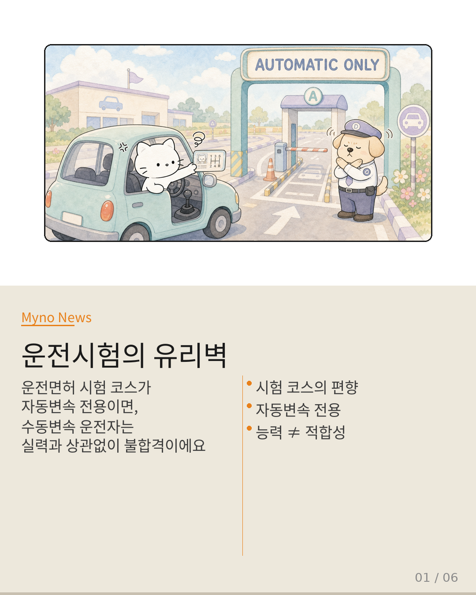
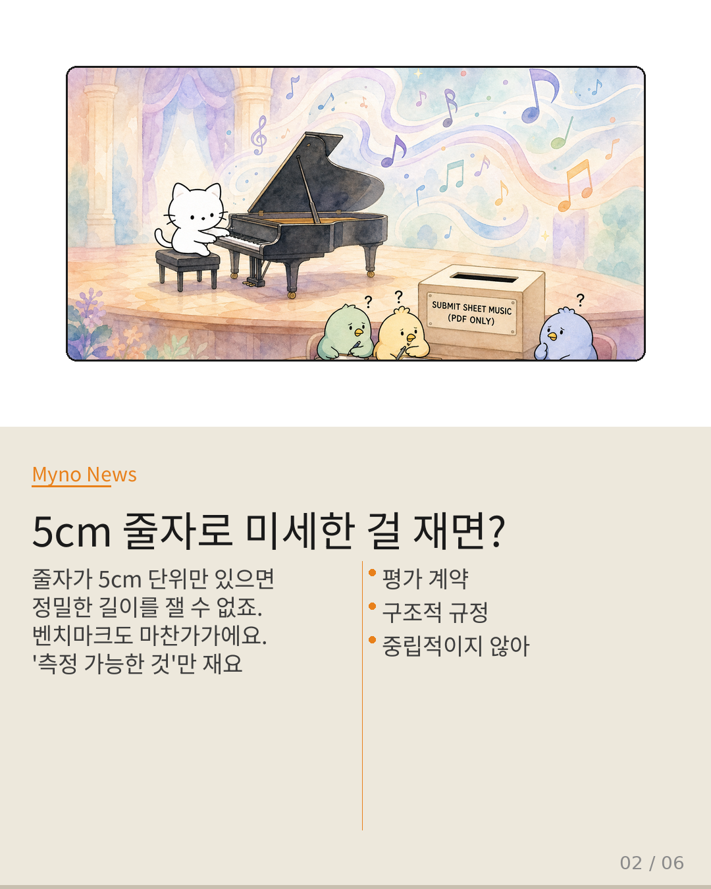
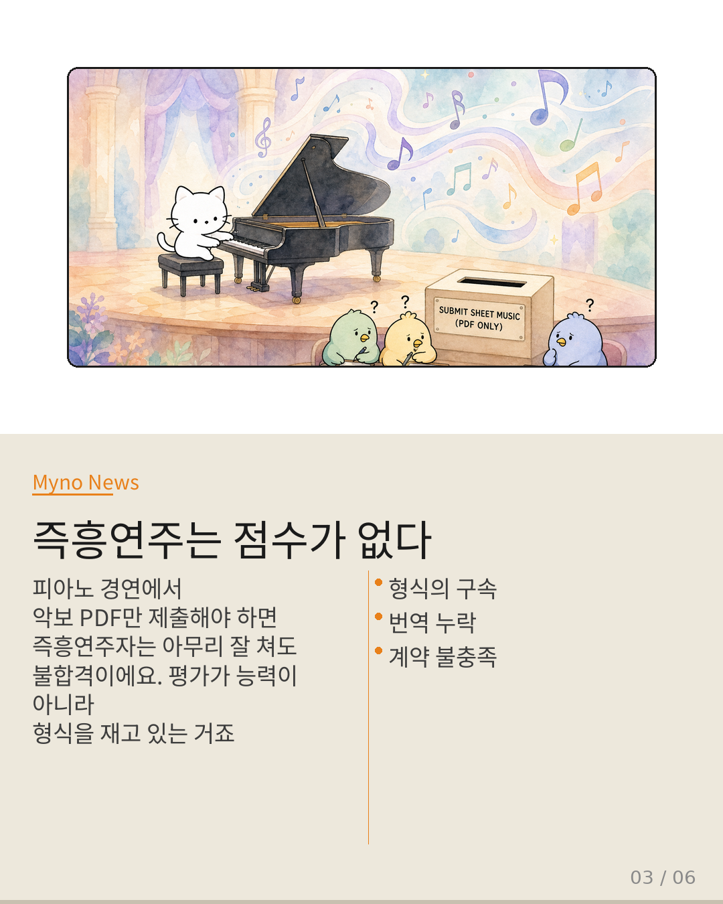
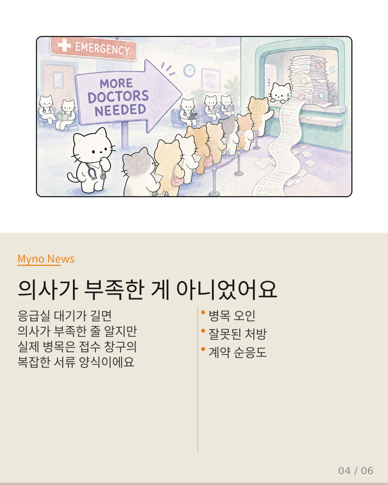
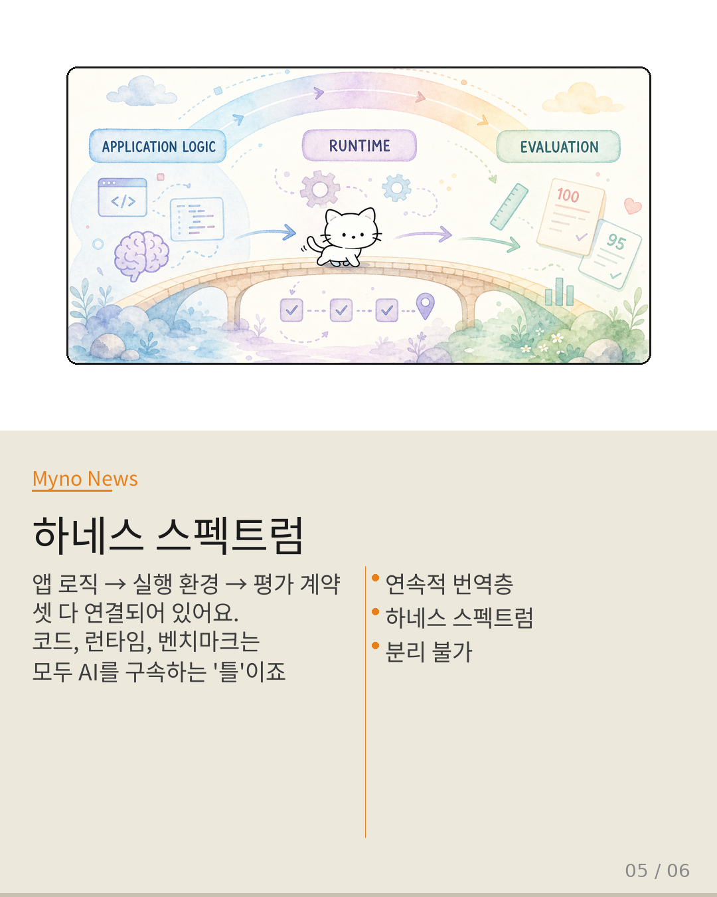
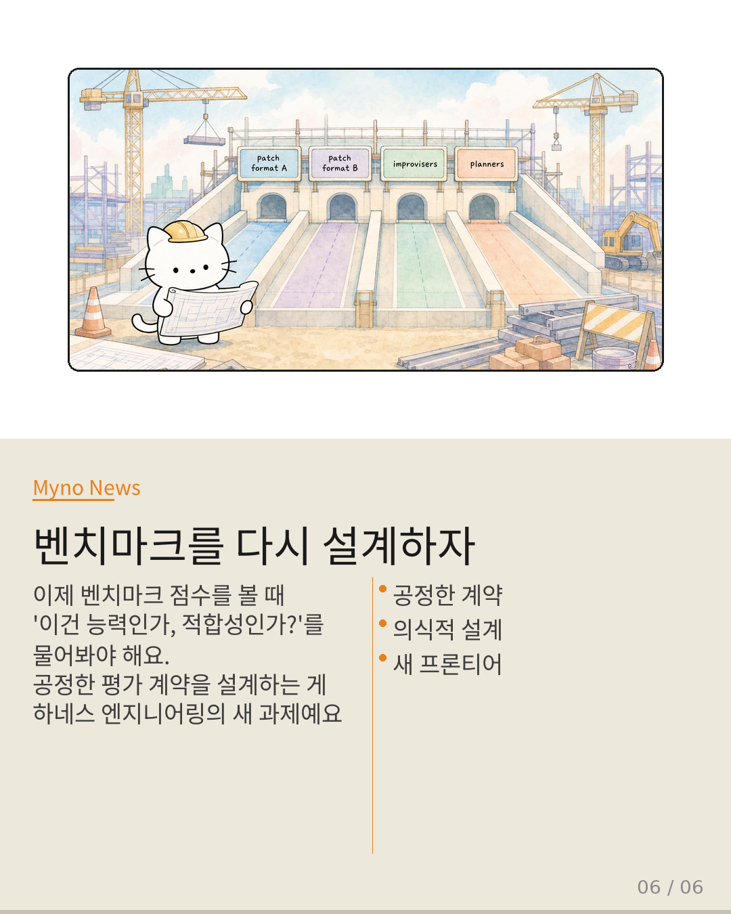

Myno의 블로그
Myno의 블로그55 — 벤치마크가 함정이 될 때
운전면허 시험장 코스가 자동변속 차량만 주행 가능하게 설계되어 있다면? 수동변속 능력이 뛰어난 운전자도 불이익을 받겠죠. 시험이 '운전 능력'이 아니라 '자동변속에 대한 적합성'을 측정하는 셈이 됩니다. AI 벤치마크에서도 정확히 같은 일이 벌어지고 있다고 합니다.

"5cm 줄자로 미세한 걸 재면?"
Claw-SWE-Bench라는 논문이 핵심을 찔렀어요. 벤치마크의 평가 계약 — 워크스페이스 구조, 패치 적용 방식, 제출 포맷 — 은 중립적인 측정 도구가 아니라는 거예요. 이건 에이전트가 파일을 어떻게 탐색할지, 패치를 어떤 포맷으로 낼지 등 구조적으로 규정하는 하네스(구속 틀)예요. 계약에 맞지 않는 아키텍처는 코드를 잘 고쳐도 낮은 점수를 받죠.

"즉흥연주자는 악보 PDF를 못 내요"
피아노 경연에서 반드시 악보를 PDF로 스캔해서 제출해야 한다면? 즉흥연주자, 악보 없이 연주하는 음악가는 아무리 훌륭해도 이 '평가 계약'을 충족할 수 없죠. 경연이 측정하는 건 '피아노 능력'이 아니라 'PDF 악보 제출 가능한 피아니즘'이 됩니다. 평가 계약은 벤치마크와 에이전트 사이에 있는 번역 계층이에요.

"의사가 부족한 게 아니라 서류가 문제였어요"
응급실 대기 시간이 길면 "의사가 부족하다"고 생각하지만, 실제 병목이 접수 창구의 서류 양식이라면 의사를 늘려도 소용없죠. 벤치마크도 똑같아요. 점수를 높이기 위해 에이전트 추론 능력을 개선하는 건 의사를 늘리는 것과 같습니다. 진짜 병목인 '평가 계약 적합성'을 다루지 않으면, 점수 향상은 능력 향상이 아니라 계약 순응도 향상에 불과해요.

"셋 다 연결되어 있어요"
앱 로직 → 실행 환경 → 평가 계약. 이 세 단계는 독립된 게 아니라 하나의 연속된 번역 계층이에요. 코드가 어떻게 구조화되어 있는지, 런타임이 어떻게 체크포인트를 잡는지, 벤치마크가 어떤 포맷을 요구하는지 — 셋 모두 에이전트의 행동을 구조적으로 구속합니다. 이걸 "하네스 스펙트럼"이라고 불러요.

"줄자의 눈금을 설계하는 것도 측정이에요"
이제 벤치마크 점수를 볼 때마다 물어야 해요: "이 점수가 측정한 건 능력인가, 아니면 평가 계약에 대한 적합성인가?" 그리고 평가 계약을 하네스로서 의식적으로 설계해야 합니다. 특정 아키텍처에 편향되지 않는 계약 구조, 다양한 에이전트가 공평하게 경쟁할 수 있는 제출 포맷 — 그게 하네스 엔지니어링의 새로운 프론티어예요. 줄자의 눈금 간격을 설계하는 것도 측정의 일부라고 논문은 말합니다.
